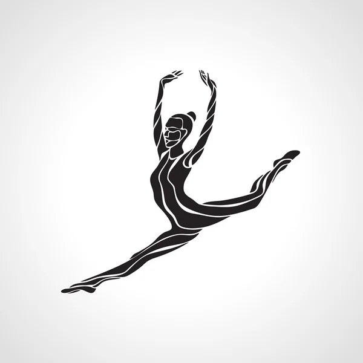

Natation :
Pratique de la natation dès l’âge de cinq ans. Participation à plusieurs compétitions. Plusieurs fois championne de Tunisie dans la catégorie minime et cadette. Faisait partie de l’équipe nationale Tunisienne de la natation..
Canoë kayak :
Pratique du canoë kayak dès l’âge de dix ans. Participation à plusieurs compétitions. Plusieurs fois championne de Tunisie dans la catégorie minime et cadette. Faisait partie de l’équipe nationale Tunisienne du canoë kayak.
Gymnastique :
Pratique de la gymnastique entre l’âge de 5 à 10 ans.
